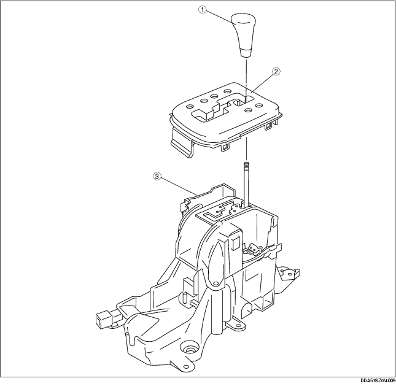

Selector lever disassemblt/assembly (sport AT) 1. Disassemble in the order shown in the figure. 2. Assemble in the reverse order of disassembly. 1 Selector lever knob 2 Indicator panel 3 Selector lever